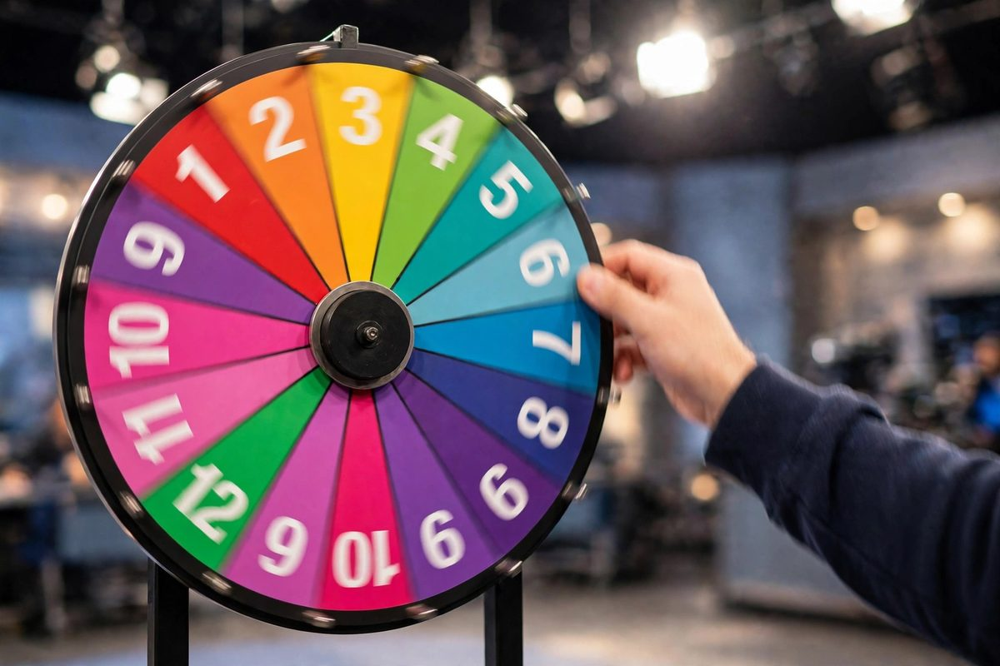
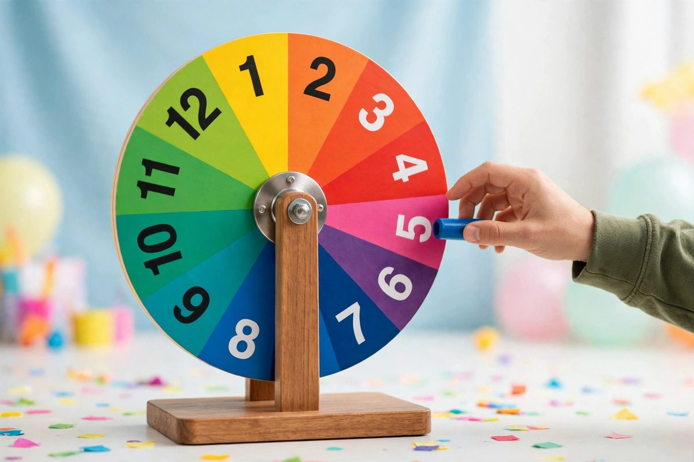
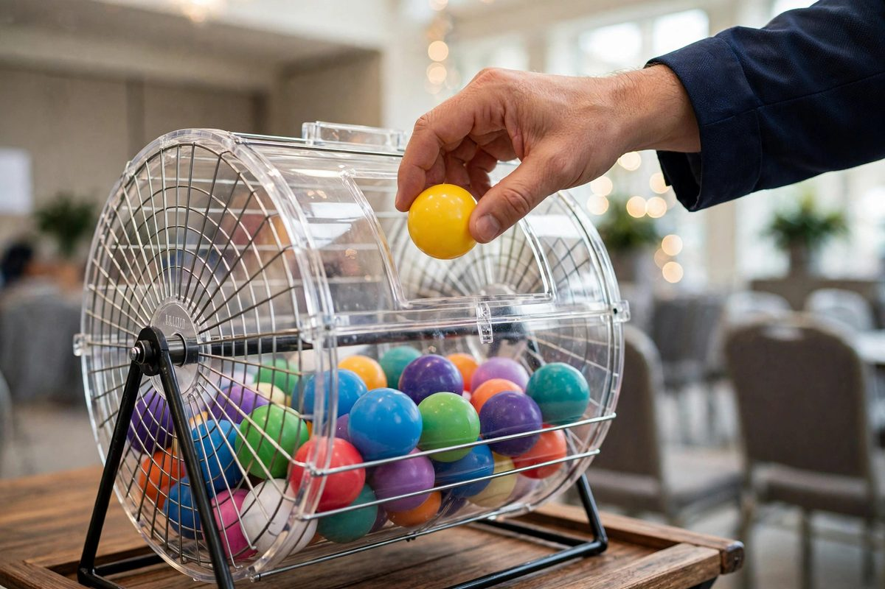
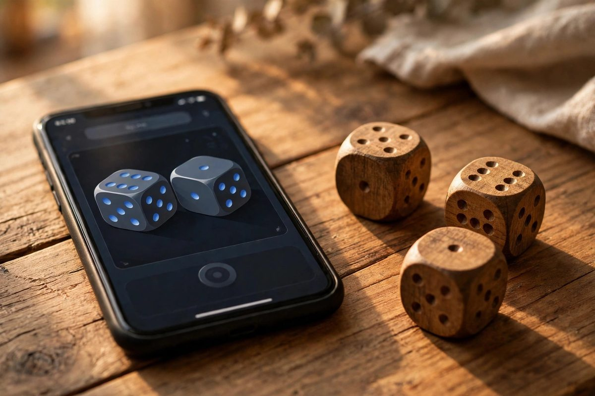
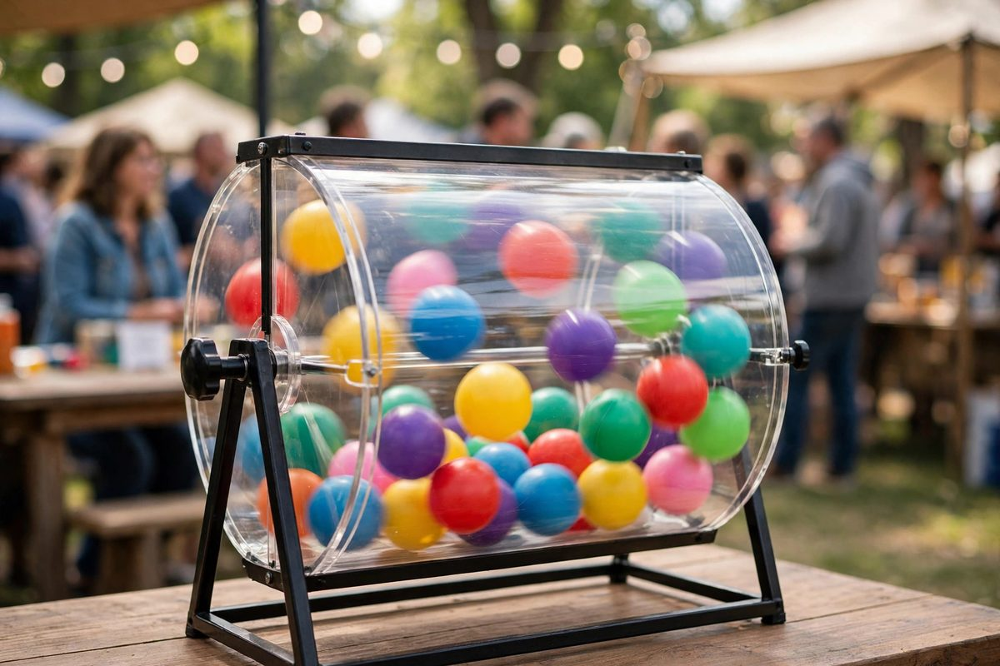
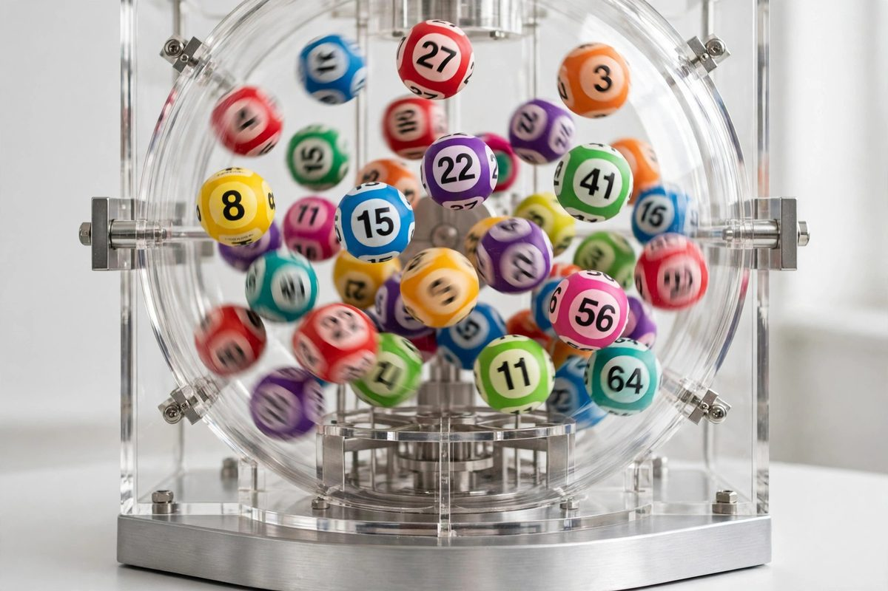
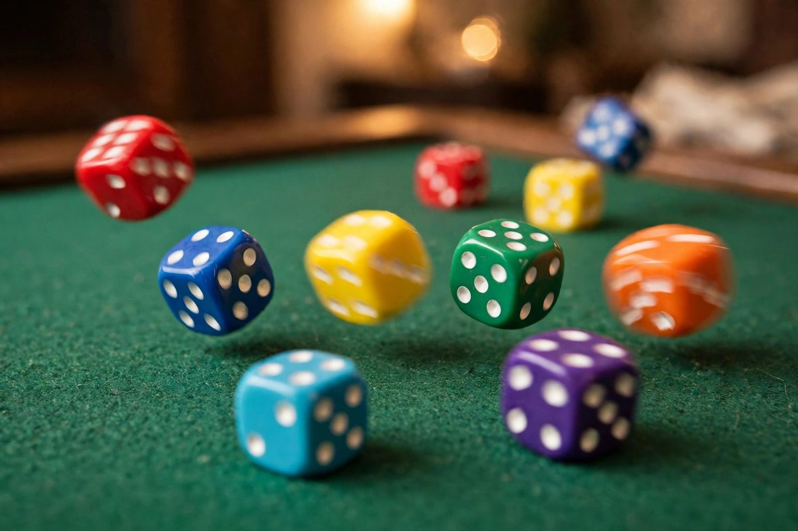
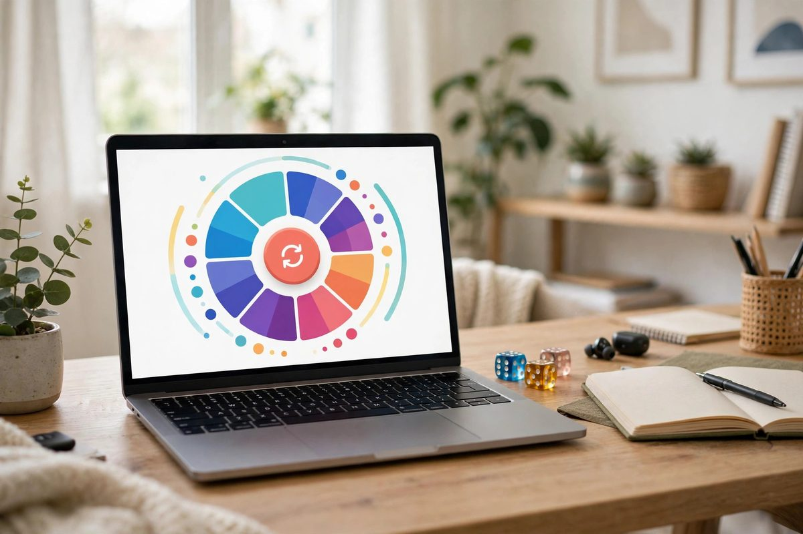

Random Number Generator
Generate random numbers, roll dice, flip a coin and pick winners from a list. All tools are free, work in your browser, and send no data anywhere.
How to use this site
Start with the main tool above, then explore the related tools and the twenty guides below. Learn more in these guides: How to Generate a Random Number in a Range What Is a Random Number Generator and How Does It Work How to Roll Dice Online for Board Games Coin Flip Online: How It Works and When to Use It How to Pick a Random Winner From a List Random Numbers for Games, Raffles and Giveaways. Each guide explains one task in plain language, with a worked example you can check yourself.
For a first try, use the example input already filled in on the tool, press the button, and read the result. Then change one value and try again. That short practice is the fastest way to learn the method.
Tools
Random Number Generator
Generate random numbers in a range, with or without repeats.
Dice Roller
Roll one or more dice and see the total.
Coin Flip
Flip a virtual coin and see heads or tails.
Random Picker
Pick a random winner from a list of names or items.
Guides

How to Generate a Random Number in a Range
Read the full guide with a worked example, common mistakes and answers to frequent questions.

What Is a Random Number Generator and How Does It Work
Read the full guide with a worked example, common mistakes and answers to frequent questions.
How to Roll Dice Online for Board Games
Read the full guide with a worked example, common mistakes and answers to frequent questions.
Coin Flip Online: How It Works and When to Use It
Read the full guide with a worked example, common mistakes and answers to frequent questions.
How to Pick a Random Winner From a List
Read the full guide with a worked example, common mistakes and answers to frequent questions.
Random Numbers for Games, Raffles and Giveaways
Read the full guide with a worked example, common mistakes and answers to frequent questions.

How to Generate Random Numbers Without Repeats
Read the full guide with a worked example, common mistakes and answers to frequent questions.

Random Number Generator vs Dice: Which to Use
Read the full guide with a worked example, common mistakes and answers to frequent questions.
How Random Is Math.random in JavaScript
Read the full guide with a worked example, common mistakes and answers to frequent questions.
Using Random Numbers for Passwords and Codes
Read the full guide with a worked example, common mistakes and answers to frequent questions.

How to Run a Fair Random Draw
Read the full guide with a worked example, common mistakes and answers to frequent questions.
Random Picker for Classrooms and Teams
Read the full guide with a worked example, common mistakes and answers to frequent questions.

How to Generate Random Numbers for a Lottery Draw
Read the full guide with a worked example, common mistakes and answers to frequent questions.
Common Random Number Mistakes to Avoid
Read the full guide with a worked example, common mistakes and answers to frequent questions.
Random Numbers in Statistics and Sampling
Read the full guide with a worked example, common mistakes and answers to frequent questions.
How to Choose a Random Team or Group
Read the full guide with a worked example, common mistakes and answers to frequent questions.

Dice Roller Probabilities Explained
Read the full guide with a worked example, common mistakes and answers to frequent questions.
Coin Flip Probability Explained
Read the full guide with a worked example, common mistakes and answers to frequent questions.
How to Use a Random Number Generator for Decisions
Read the full guide with a worked example, common mistakes and answers to frequent questions.

Random Number Generator FAQ and Best Practices
Read the full guide with a worked example, common mistakes and answers to frequent questions.
Frequently asked questions
How do I use the main tool on this site?
Open the tool, enter your input in the labelled fields, press the button, and read the result. The worked example on the tool page shows what a correct result looks like.
Is my input sent anywhere?
No. All processing happens in your browser, on your device. No data leaves your device when you use these tools.
Do the tools work on a phone?
Yes. Every page is mobile-first and responsive, with large touch targets and layouts that fit a 360 pixel wide screen without horizontal scrolling.
What if the result looks wrong?
Check the input first, then run the worked example from the matching guide. If the example works, the input is usually the cause.
Are the guides free to read?
Yes. All twenty guides are free, with worked examples, a tip box and answers to frequent questions.
Can I use the result for work or study?
Yes, for everyday use. For important decisions, confirm the result with a second example or an official source.